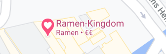

The best ramen in Amsterdam! Japanese style in-front kitchen seating. They have received an Gault&Millau POP2020!
They serve really delicious ramen with authentic Japanese Tonkotsu broth. The noodles are cooked
perfectly
and the
Char Siew pork has an amazing texture! You have the option of the basic and spicy version.
Both
are amazing!
for the price, it’s really good! For €13,50 you have big bowl which could get you full and for a refill of the noodles it’s only €2,50 extra.
Take into consideration before coming that the restaurant is very small. They are a first come first serve, so you can’t book a table. You might have to wait a while if you want a seat. We recommend to come early to grab a seat!
